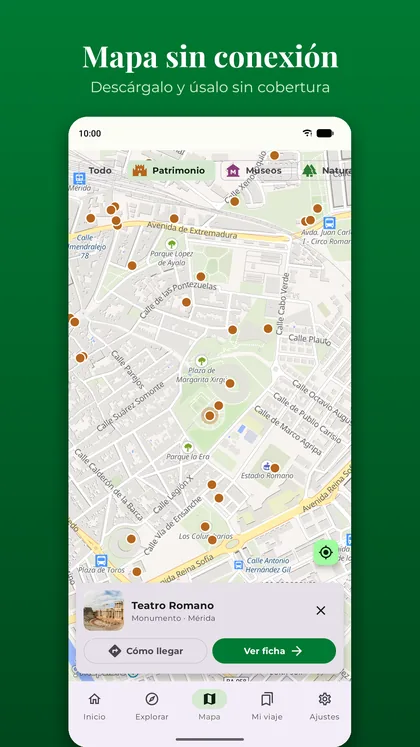
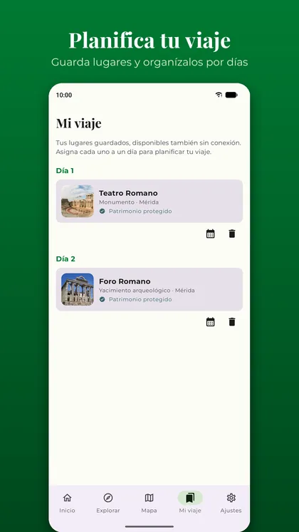
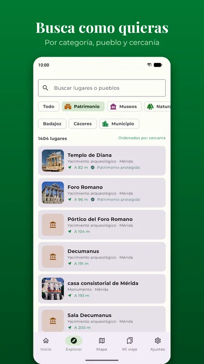
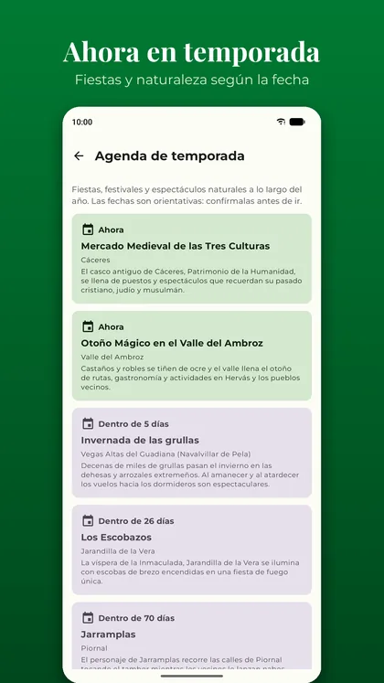

ExplorerSaga Extremadura
Toda Extremadura en el bolsillo, también sin cobertura.
App Android nativa con más de 5.700 lugares de Cáceres y Badajoz, mapa vectorial sin conexión, 8 rutas, agenda de temporada y planificador de viaje, en español e inglés. No tiene servidor propio: el contenido lo genera una fábrica de datos en Python a partir de datos abiertos y se publica como paquete versionado en GitHub.
- 5.700+ lugares
- Mapa sin conexión
- Gratis y sin cuenta
- ES / EN
La app está en prueba cerrada en Google Play: escríbeme con tu cuenta de Google y te doy acceso.

✦ Lo que puedes hacer
Por qué te va a gustar ExplorerSaga Extremadura
Lo que toca ver, hoy
La portada te enseña lo que pasa esta temporada (el cerezo en flor del Jerte, la berrea en Monfragüe, el Festival de Mérida) y los lugares que tienes cerca.

Un mapa que no te deja tirado
Descarga el mapa de Extremadura, unos 60 MB, y úsalo en plena sierra sin una sola raya de cobertura.
Todo sobre cada lugar
Foto, historia, horario, accesibilidad y cómo llegar. Llamar o abrir la web está a un toque.
8 rutas listas para seguir
De la Mérida romana en un día al Valle del Jerte o la judería de Hervás, con sus paradas en el mapa y navegación en tu app de mapas.

Tu viaje, organizado por días
Guarda lugares y repártelos por días. Todo se queda en tu móvil y funciona sin conexión.
Capturas de la versión 2
desliza →
-
Inicio: categorías, eventos de temporada y lugares cerca de ti. -
Mapa vectorial que se puede descargar para usarlo sin cobertura. -
Ficha de un lugar con foto de Commons, descripción y cómo llegar. -
Una de las 8 rutas, con mapa y paradas. -
Mi viaje: favoritos organizados por días, también sin conexión. -

Explorar: búsqueda sin tildes y filtros por categoría, provincia y municipio. -

Agenda de temporada: fiestas y naturaleza según la fecha.
¿Te apetece probar ExplorerSaga Extremadura?
La app está en prueba cerrada en Google Play: escríbeme con tu cuenta de Google y te doy acceso.
{ } Bajo el capó
Cómo está hecha
Para quien quiera saber qué hay detrás: el problema, la arquitectura, código real y las decisiones que tomé.
- lugares de Extremadura
- 5.700+
- mapa y contenido
- Offline
- tests
- 103
01 El problema
La información turística de Extremadura está repartida entre webs oficiales, Wikipedia y mapas, y en muchos pueblos y espacios naturales no hay cobertura. La primera versión, mi TFG, cubría solo Mérida y dependía de un backend; la v2 tenía que cubrir toda la región, funcionar sin conexión y no costar nada de mantener.
02 Arquitectura
03 Un fragmento del código
suspend fun sync(): SyncResult = withContext(Dispatchers.IO) {
try {
val manifest = ContentImporter.json.decodeFromString<ContentManifest>(
download(baseUrl + MANIFEST).decodeToString()
)
if (manifest.schema != ContentImporter.SUPPORTED_SCHEMA) return@withContext SyncResult.UP_TO_DATE
if (manifest.version <= (dao.meta()?.version ?: 0)) return@withContext SyncResult.UP_TO_DATE
val bytes = download(baseUrl + manifest.file)
if (bytes.size.toLong() != manifest.size || ContentImporter.sha256(bytes) != manifest.sha256) {
Log.w(TAG, "Paquete descartado: tamaño o hash no coinciden")
return@withContext SyncResult.FAILED
}
importMutex.withLock {
import(ContentImporter.readPack(ByteArrayInputStream(bytes)))
}
SyncResult.UPDATED
} catch (e: IOException) {
Log.w(TAG, "No se pudo actualizar el contenido", e)
SyncResult.FAILED
} catch (e: IllegalArgumentException) {
Log.w(TAG, "Paquete de contenido no válido", e)
SyncResult.FAILED
}
}
04 Qué he construido
- App en Kotlin con Jetpack Compose (Material 3), Navigation con rutas tipadas, ViewModels, DataStore y Coil 3.
- Fábrica de datos en Python 3.12 sin dependencias que cruza OpenStreetMap, Wikidata, Wikipedia, Wikimedia Commons y datos abiertos de la Junta de Extremadura. Con la misma caché genera el mismo paquete byte a byte.
- El paquete se publica como GitHub Release con un manifiesto versionado y su sha256. WorkManager busca versiones nuevas cada 3 días, comprueba tamaño y hash antes de importarlas y conserva los favoritos del usuario.
- Room con FTS4: búsqueda de texto completo sin tildes, en los dos idiomas y por categoría («museo», «castle», «farmacia»).
- Mapa vectorial con MapLibre y OpenFreeMap, con lugares agrupados por zonas y descarga del mapa de Extremadura (unos 60 MB) para usarlo sin conexión.
- Fichas con foto de Commons y su autor y licencia, descripción de Wikipedia, horario y accesibilidad; 8 rutas, «Ahora en temporada», Mi viaje por días y servicios útiles con llamada al 112.
- Sin cuentas ni rastreadores, con ajustes para borrar caché y datos. La v1 del TFG (backend Spring Boot hexagonal con PostgreSQL) sigue en el repositorio.
- 103 tests: 26 unitarios y 3 de interfaz en Android, 26 de la fábrica de datos y 48 del backend v1.
05 Decisiones y por qué
- Sin servidor en la v2. Los datos turísticos cambian poco, así que un paquete versionado en GitHub Releases sustituye al backend del TFG: coste cero, funciona sin cobertura y no hay nada que mantener encendido. A cambio, el contenido se actualiza cada pocos días, no al instante.
- Búsqueda local con Room FTS4 en lugar de una API de búsqueda. Funciona en un pueblo sin cobertura; las tildes se normalizan al indexar para que «caceres» encuentre «Cáceres».
- Fábrica de datos en Python sin dependencias y reproducible. Si el mismo origen genera el mismo paquete byte a byte, el sha256 del manifiesto sirve para saber si hay contenido nuevo de verdad.
- Inyección de dependencias manual con un AppContainer en lugar de Hilt. Para una app de este tamaño evita procesar anotaciones y mantiene el grafo de dependencias visible en un solo fichero; si la app crece, el paso a Hilt es directo.
Transparencia: el estado indicado arriba refleja el README del repositorio. Lo que está planificado se marca como tal; el código y la documentación completa están en GitHub.